|
|
|
Browsing
Contact Us |
Campaigners |
Face to Face |
Tribune |
Interview |
News |
On the Web |
One Million |
Report
Farsi | Français | German | Italian | Spanish | العربية Also in this section
|

Women’s Rights Activists Visit with Families of Imprisoned Activists, Nasrin Sotoodeh, Bahareh Hedayat and Mahdieh Golroo Honoring Women’s Resistance and Struggle on March 8thTranslated by: Sussan Tahmasebi Thursday 31 March 2011 Fair Family Law: On the occasion of March 8, International Women’s Day, a number of Iranian women’s rights activists visited with the families of their imprisoned colleagues Nasrin Sotoodeh, Bahareh Hedayat and Mahdieh Golroo. The following is a report on these visits. Nasrin Sotoodeh Is a Symbol of Resistance Nasrin Sotoodeh a human rights lawyer who has represented many women’s rights and civil society activists, as well several minors sentenced to execution has been imprisoned in relation to her human rights activities since September 4, 2010. Nasrin is also a women’s rights and child rights advocate. She has been sentenced to serve eleven years in prison and has been banned from practicing law and from traveling outside the country for ten years, a ruling which her lawyers are appealing. On March 8, a group of women’s rights activists visited with her husband Reza Khandan and her two children Mehraveh and Nima. During this visit, Minou Mortazi a women’s rights activist addressed Reza Khandan, Nasrin’s husband, saying that: “We have come here on the occasion of International Women’s Day to honor Nasrin as an outstanding and resilient women’s rights activist. All of us, as well as many others who are not present here today, can testify to the honesty and purity of Nasrin in pursuit of her grand ideals and goals. Nasrin is a woman fighting for justice, who knows fully that the price for the pursuit of justice, in the male centered history of Iran has consistently been an extreme one. Still she is not willing to end her pursuit of justice. The interesting point in the struggle for women’s rights and for the pursuit of justice in Iran, is the fact that both men and women are involved in the struggle for justice and democracy together and they both are punished equally for these activities. People like Nasrin, with her commitment to the struggle for human ideals have expanded the sphere of gender equality. Women too are now expected to pay the price for demanding democracy. If prior to this men were the direct actors in the struggle for justice and women followed them in this path, today it is the women—mothers and daughters alike—who are followed in the pursuit of justice and resistance by men—young and old. We are indeed witness to how you have suffered in this predicament and at the same time we are aware of your patience and your resistance and value the respect you have exhibited for the ideals of equality pursued by Nasrin and other women activists. I pray to God that Nasrin returns to you and her dear children and ill mother, with greater pride, added experience and increased spiritual capacity.”
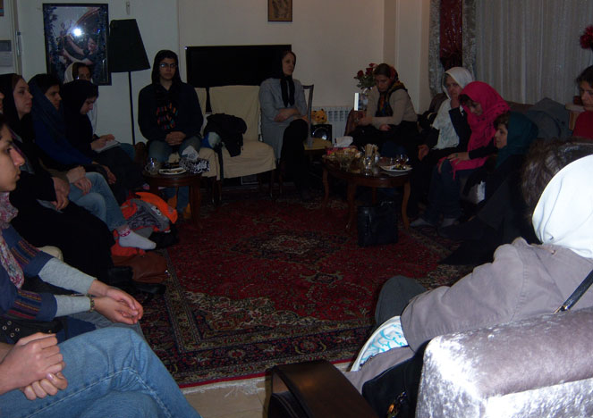 Zohreh Tonekaboni, another women’s rights activist, had the following to say: “Mr. Khandan, as a past political prisoner and someone who has had relatives in prison, I can say that the families of political prisoners have a very negative perspective of prison. But those who are imprisoned as a result of fighting for their ideals are blessed with greater strength and capacity which helps them endure their time in prison. Sometimes we were not allowed visits in prison and this would make it difficult for our families and they would worry. We were always surprised why our families were so worried. This is due to the perceptions that people have about prison.” Nayereh Tavakoli, another women’s rights activist present in this visit had the following to add: “Nasrin Sotoodeh is exceptional. Despite being pregnant and having a child, she never shied away from her struggle. She did all this without expecting to gain acclaim or benefit. She took up the cases of and defended activists or minors sentenced to execution. We hope that the situation will improve. You have proven that you are an exceptional couple and you have proved that there is no difference between men and women.”
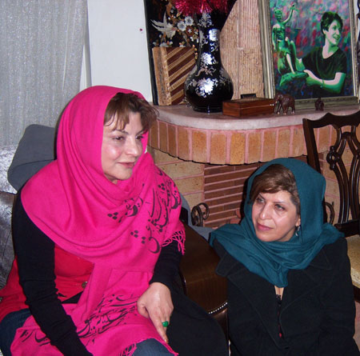 Tavakoli continued by explaining that: “examining the developments in the middle east, makes you realize that Iranians have a 100 year history of struggling for democracy, where both women and men have been involved. “ Fakhri Shadfar, a women’s rights activist, also present at this visit, wished to have Nasrin among women’s rights activists soon again and hoped for better days for Iran and in the region.
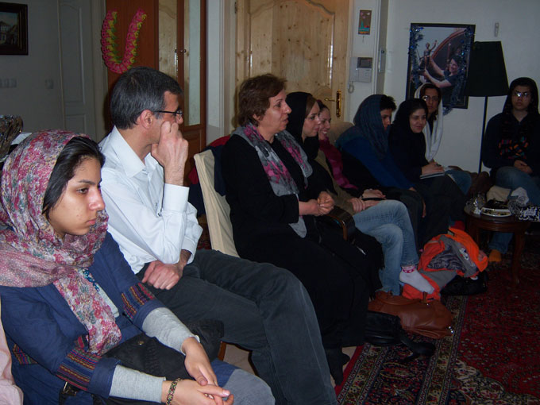 Kave Mozzafari, while commending Nasrin’s capacity for resistance, reminded all that: “in these past years, what has often been forgotten has been resistance. In recent years, what has been promoted is the concept that resistance is not necessarily a necessity. Nasrin has reminded all of us the importance of resistance. With her resistance, Ms. Sotoodeh has reminded us all of the value of resistance, and has shown us that we can resist and at the same time strengthen collective spirit.” Mozzafari added that: “according to one of Officers of the Revolutionary Guards, Ms. Sotoodeh, broke the ranks. This is an image that many could not create. I hope that we will value Nasrin and as such work to revive this value in a society where individuality is becoming the norm.” Sonya Turkaman, addressing Reza Khandan, had the following to say: “I am sure the absence of Nasrin, given all the difficulties you are facing as a family is also a positive thing allowing you to become stronger. These difficulties will increase your strength and capacities, no doubt.”
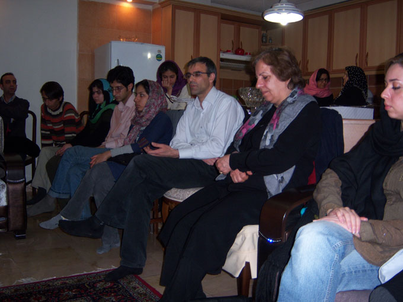 Reza Khandan, Nasrin’s husband, while thanking all the visitors had the following to say: “during this time when Nasrin has not been here, it has been these very supports and visits by Nasrin’s friends and colleagues, some of whom I had never met before, which has sustained us. Despite all the difficulties and problems that the families of prisoners have faced during this period, we have not succumbed. I have never felt that when faced with these challenged I have had the lower hand, nor Nasrin for that matter. In fact, we have had the upper hand.” Khandan added that: “we have never felt that we have no options. The pressures they inflict on the families of those imprisoned is intended to break the prisoner. They arrest both husband and wife, or use their children as a means to pressure those in prison. But I am hopeful that those who benefit from greater wisdom will choose the middle road and will return from this path and will stop the pursuit of measures which yield no benefit.” Khandan also discussed the situation of their children, by explaining that: “first I thought that Nima [because of his young age] is not very aware of the situation. He would say things that indicated that he thought his mom was at work. He would ask for example why his mother worked so much and why she would not come to be with us. But a few days ago when we were in the car, Nima spotted a policeman who was near our car when we were stopped behind the red light. He asked me, Dad is this the same police that takes people and sticks them in cages? This shows that despite his young age, and despite the fact that he does not admit it easily, he is aware of the situation of his mother. A few nights ago too Nima said that he had a dream that ‘the man would bring my Mom home.!!’ So it seems that he understands that someone is preventing his mom from coming home. Mehraveh is older and understands the situation, but she is silent.” Needless to say these stories impacted the guests deeply and many began to cry. Nima was presnt too helping his father by offering the guests chocolate. Khandan stressed that: “at first I thought that the kids did not understand the situation, but now it is apparent that they do understand they just don’t verbalize it. I am now taking Nima to see a psychiatrist so he can talk about his feelings and hopefully this will minimize emotional damage from the stress of having his mother imprisoned at such a young age.” Reza Khandan also explained that to date he has never had an in person visit with his wife and their visits were in cabins with glass separating them. “I have only seen her in person at court, but those visits included the presence of court officials. Nasrin has been given three in person visits with the children, which we took Mehraveh to. The children have a very unpleasant image of prison.” In the end the women’s rights activists visiting with Nasrin’s family thanked Reza Khandan’s mother who has taken up the burden of caring for Reza and Nasrin’s two young children and wished the family happier and better days to come. The Resistance and Commitment of Young Activists Like Bahareh Hedayat and Mahdieh Golroo has Reinforced the Patience and Strength of their Spouses as Well Women’s rights activists also visited with the family of Bahareh Hedayat for International Women’s Day, March 8. Bahareh Hedayat, a leading women and student’s rights activist, is currently serving her 9 and half year prison sentence. She was arrested during the post election unrest on December 31, 2009 and has remained in prison since. Despite suffering from health problems she has not been allowed furlough. Also she has been denied visits by her family or phone contact with them since November 3, 2010 when she was reportedly transferred the Methadone Section of the Women’s Ward in Evin prison. Seven and half years of Bahareh’s sentence has been issued in relation to charges brought against her for her student activities, while 2 years in prison was a sentence issued in relation to her participation in a protest in support of women’s rights in June 2006. In this visit, Minou Mortazi, pointed to a new historical period in Iran, where Iranian men, as husbands, brothers and fathers, are supporting women engaged in struggle for a equal rights for women and for democracy. Mortazi added: “this resistance is beautiful and will be much more beautiful if the capacities, talents and patience of men are discovered, strengthened and expanded in the process.”
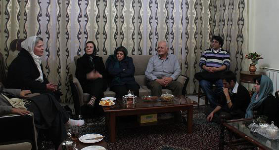 Those visiting with the family of Bahareh, asked her parents what changes they have undergone in the year and half since Bahareh was arrested and what they expected from other activists during this time?
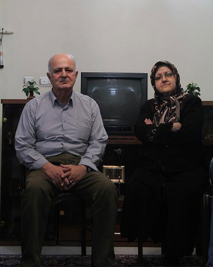 Bahareh’s father spoke with those present in this visit with great calm, expressing concern about their inability to visit with Bahareh over the past four months, while hoping that this restriction would be lifted.
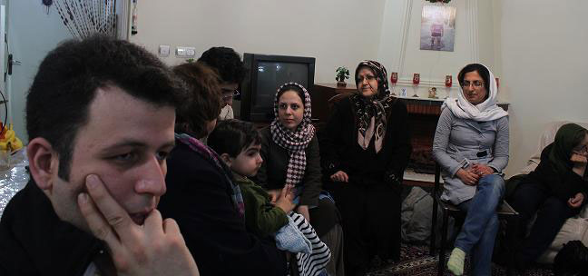 Bahareh’s husband, Amin Ahmadian, who like Bahareh herself benefits from a resilient spirit, explained that “the best way to get information on how Bahareh is doing, is to talk to the families of prisoners who are in the same ward as Bahareh.” In visits with their families, these prisoners usually relay information about the health and condition of their cellmates who have been denied visits or telephone calls. Amin Ahmadian was critical about the fact that Bahareh has been denied visits and contact with her family. “Bahareh has been given one of the harshest and longest prison sentences issued to student activists, but the authorities are not satisfied with this measure. So they prevent her from having telephone contact and visits with her family as a measure to exert greater pressure on her in prison.” One of the Activists present during this visit emphasized that: “those of us outside of prison at present owe a great deal to those who have suffered such difficulties in the past years by enduring imprisonment. Of course with our peaceful strategies and approaches we hope to create change in the behavior of those who pressure the children of this land or who use violence. We hope to maintain this non-violent approach throughout this struggle.” Zohreh Tonekaboni talked about her own experience of imprisonment before the Revolution (1979) by comparing the two periods and explaining that: “this shows that governments come and go, but the changes that lead to social developments will always remain. We should not make a mistake and take the changes needed to create a social and civic environment toward a revolution.” Shahla Forouzanfar pointed to the French Revolution and explained that: “historically the French Revolution was most successful in ensuring gender equality, but still after the French Revolution there was much violence. The point is that in the path toward realizing our demands we are not fighting with anyone, instead we move with calm and civility, slowly but without tiring. We are happy with small changes. It is these small achievements that create lasting change.”
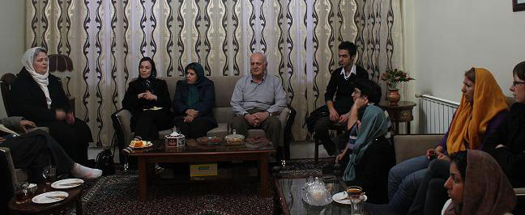 One of those present in this visit also pointed to the nonviolent movement in India, and how the struggles and resistance of people like Gandhi, including the enduring of prison, resulted in change in India. Women’s rights activists also visited Mahdieh Golroo, student activist. Madieh Golroo, a member of the Council for the Defense of the Right to Education, was arrested on December 3, 2009, and is now serving a 2 year and 4 month prison sentence. She has been denied visits with her family and telephone contact since November, when she was reportedly moved to the Methadone section of the Women’s Ward in Evin prison. Since she started serving her prison term, new charges have been brought against her, in relation to a letter she wrote on the occasion of National Student Day. She has not yet been sentenced on the new charges.
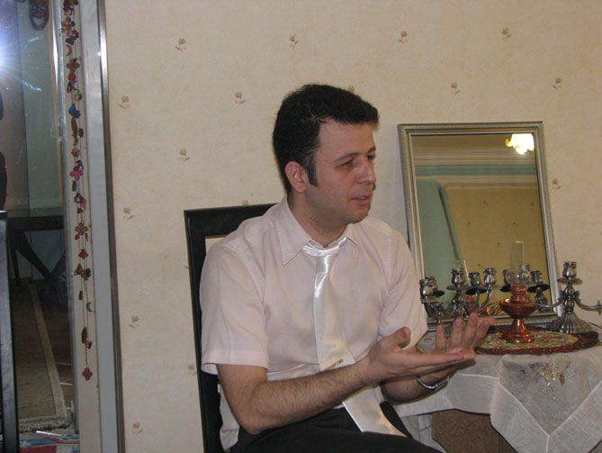 In this visit Vahid La’lipour Mahdieh’s husband spoke about his frustration regarding the ban on visits placed on his wife. He explained that: “the justification given for barring Mahdieh from visits is that there is a pending charge against her of spreading propaganda against the state. Officials have explained that until her court date on this charge, she will not be allowed visitors, so as to prevent any possible collusion. Given the fact that she is currently in prison and these are new charges brought against her in prison, this justification does not seem to make much sense.”
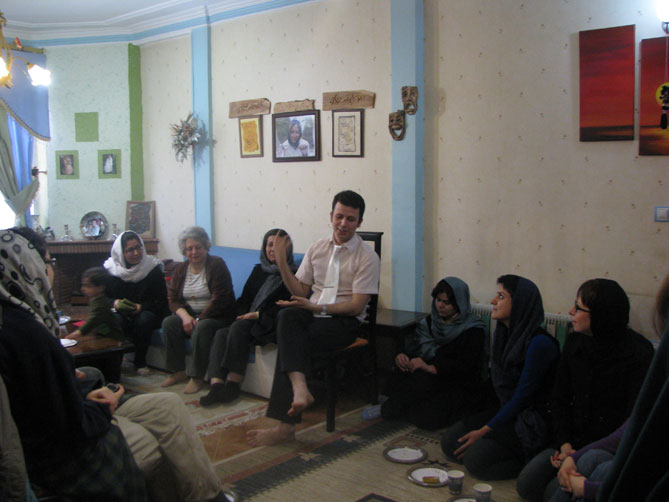 Minou Mortazi a women’s rights activist, had the following to say in this visit: “the existence of young women such as Mahdieh, who are well educated and informed is a blessing for our country. The time of classical love, longing to be with your love, and finally being together is now over. According to Marguerite Duras the meaning of love during such times can find such quality of meaning that desire goes far beyond union. The woman and man in love can achieve a kind of love in which together they can work toward mutual goals for humanity.”
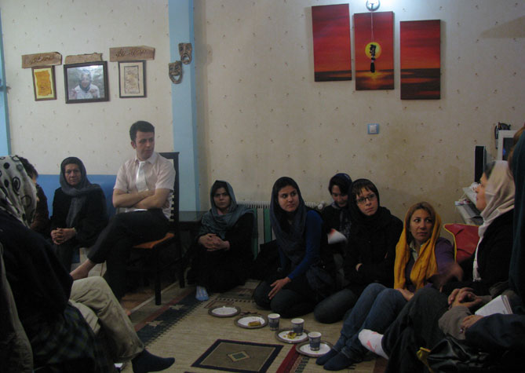 Zohreh Tonekaboni also expressed happiness at the fact that: “this kind of love exists among our youth today, who benefit from great maturity, so that instead of fixing their gaze on one another, they, hand in hand, set their sights on continuing along the path [for democracy].”
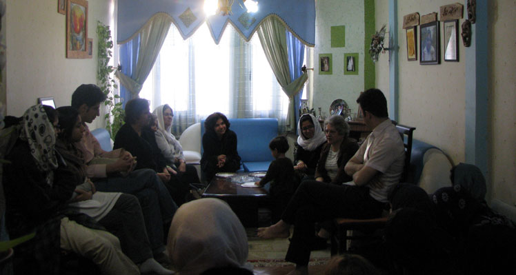 Tonekaboni continued by adding that: “it is good for love to withstand and it is good for couples to have patience, as something may change at any given moment. Despite the fact that it may seem that prison is separating couples from one another, but the love that they share will bring them and their ideals closer together.” Those present in this visit expressed their admiration for the jovial and lively spirit of Mahdieh, acknowledging that such a personality in such circumstances can be a source of strength for both her family and herself. Those present also acknowledged the strong spirit of Mahdieh’s husband and both their ability for resistance and wished that Mahdieh would be released soon, so the two of them could continue their life together. |